Configurar Microsoft Outlook 2019
A continuación, aprenderás cómo configurar tu correo personalizado en Outlook (versión 2019) de tu computadora de escritorio. Si usas Outlook 2013 o anterior, encuentra las instrucciones aquí.
Primero, abre Outlook y da clic en Agregar cuenta
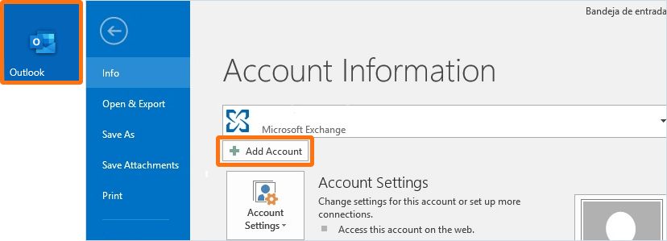Cuenta IMAP
Por defecto, agregarás tu cuenta como IMAP, pero en opciones avanzadas también podrás configurarla como POP.
Si prefieres agregar tu cuenta de correo como POP encuentra las instrucciones aquí.
1. Ingresa tu correo personalizado y da clic en Connect.

2. Ingresa tu contraseña y da clic en Connect.
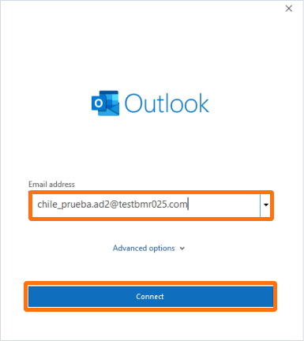Cuenta POP
Como alternativa también puedes agregar tu cuenta como POP.
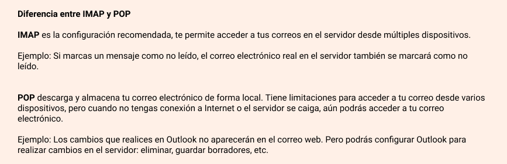Si prefieres agregar tu cuenta de correo como IMAP encuentra las instrucciones aquí.
1. Ingresa tu correo personalizado, selecciona Let me set up my account manually y da clic en Connect
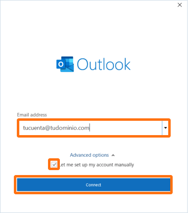2. Selecciona POP.
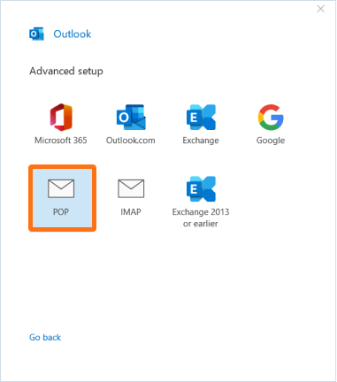3. Ingresa la contraseña de tu correo personalizado y da clic en Connect.
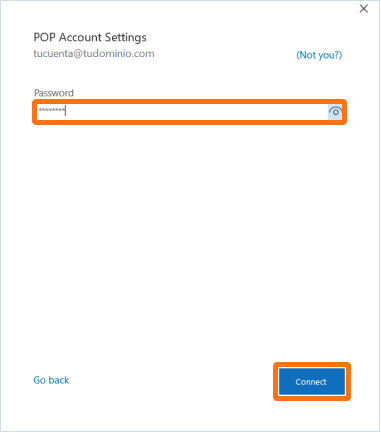4. Outlook te confirmará que la cuenta fue agregada con éxito, da clic en Done para finalizar.
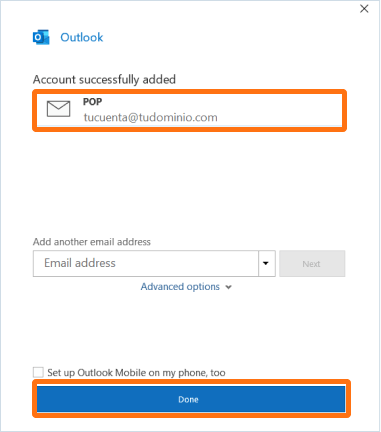Configurar Microsoft Outlook 2013
A continuación, aprenderás cómo configurar tu correo personalizado en Outlook (versión 2013) de tu computadora de escritorio. Si usas Outlook 2019 o superior, encuentra las instrucciones aquí.
1. Abre Outlook y da clic en Agregar cuenta
2. Elige Configurar manualmente y da clic en Continuar
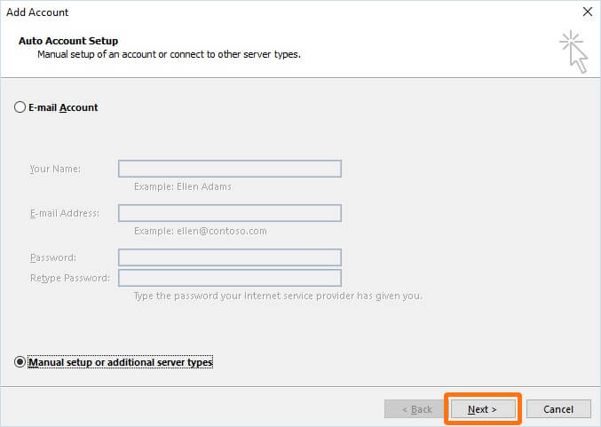3. Elige POP o IMAP y da clic en Continuar

4. Ingresa tus datos como se muestra a continuación para agregar como POP o IMAP y da clic en Más opciones
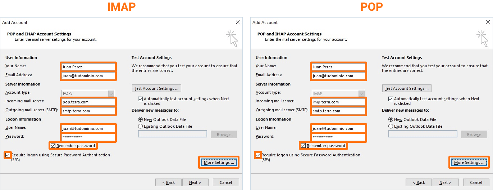Configuración de servidor de correos:
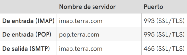5. Ingresa un nombre para identificar tu correo y da clic en Ok
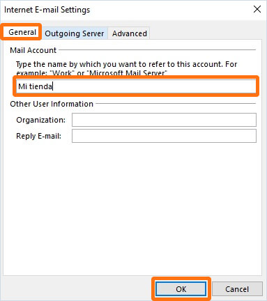6. Cámbiate a la pestaña Servidor de salida, selecciona la primera opción Mi servidor de salida SMTP requiere y Usar las mismas configuraciones.
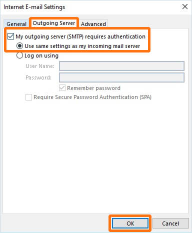7. Cámbiate a la pestaña Avanzado, asegurate que aparezcan las siguientes configuraciones para POP o IMAP:
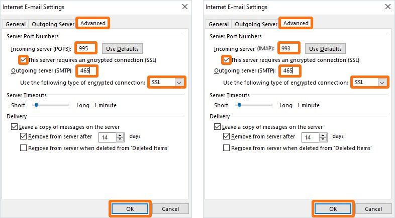Configuraciones de servidor de correos:
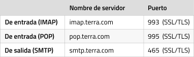8. En el último paso se realizará una prueba y si se completan con éxito, ya solo necesitas dar clic en Cerrar para finalizar y comenzar a usar tu correo.
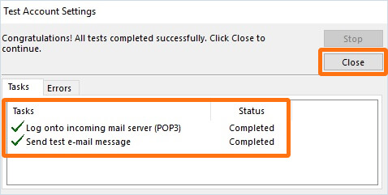 Regresar